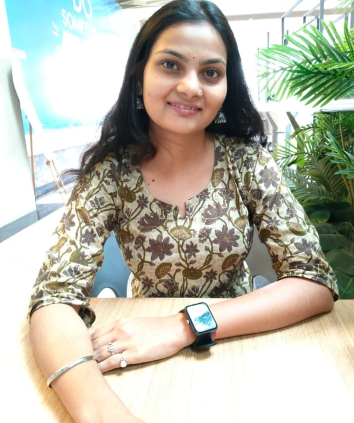
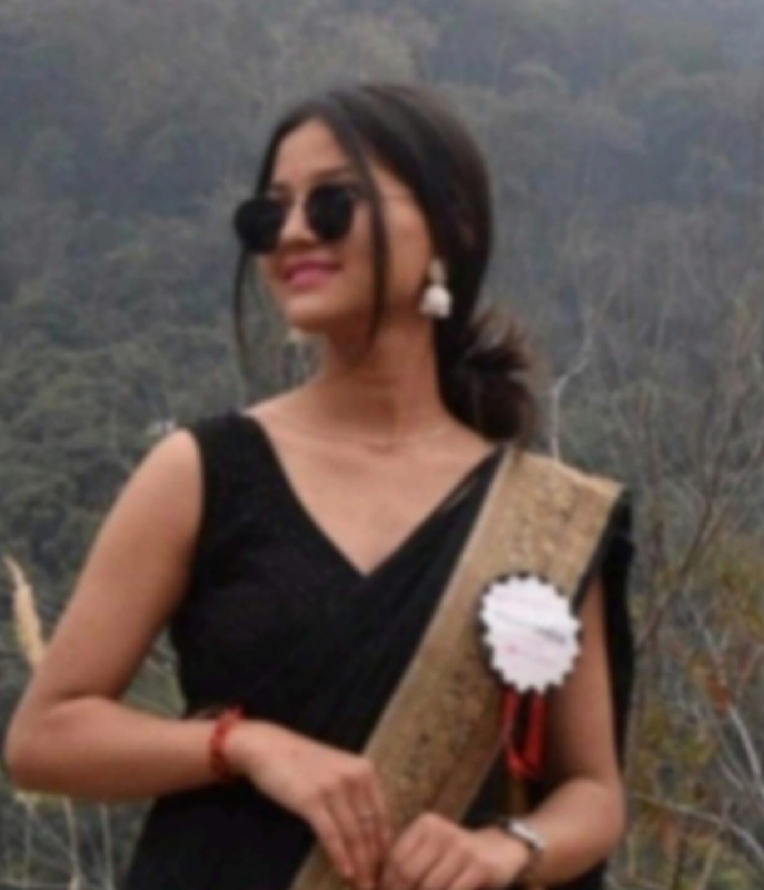
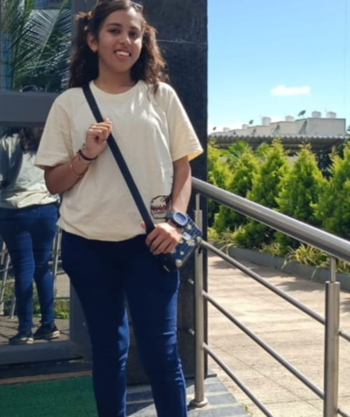
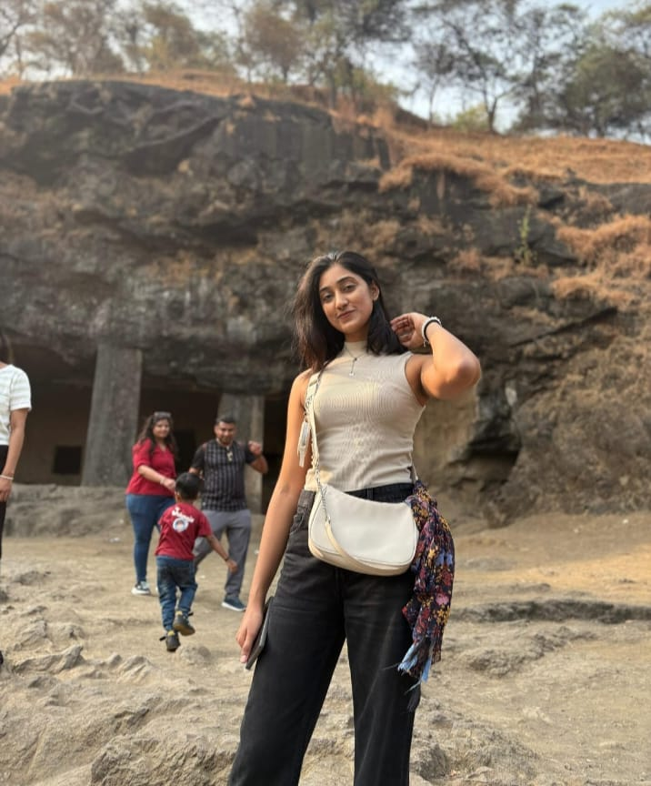
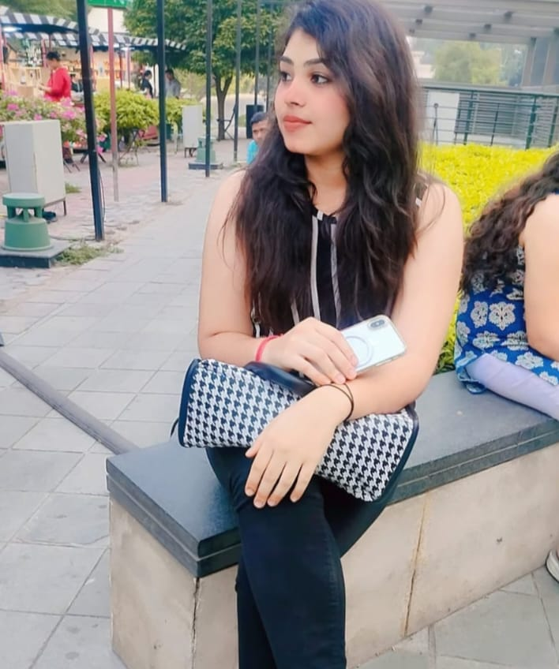

From learning to leadership, these students have
transformed their lives through dedication,
hard work and continuous learning.

Success Story
Breaking Barriers Through Education
Shreya Kirola
School of Education
My name is Shreya Verma and I joined NavGurukul in October 2022 after completing
my 12th grade at the age of 18. At that time, I had no coding background and wasn't
confident speaking with others. Over time, NavGurukul helped me grow both technically
and personally. I was selected as the Culture Coordinator, where I had the opportunity
to lead and manage a group of 100+ girls. I interacted with everyone, organized cultural
activities, and helped create a positive environment on
campus. This experience played a major role in building my confidence and strengthening my leadership skills.
In September 2024, I secured a job, which was a significant milestone in my journey.
I returned home with valuable experience, skills, and confidence that I didn't have
when I first started.

Leadership Story
Growing Into A Confident Leader
Shreya Verma
School of Programming
My name is Shreya Kirola, and I come from Uttarakhand. My journey with Navgurukul
began when I heard about it from my cousin, who studied there and built a successful
career. Her achievements inspired me deeply, and with the hope of transforming my own
future, I decided to join Navgurukul.At Navgurukul, I became a part of the School of
Programming, where I got the opportunity to learn different programming languages and
build a strong technical foundation. But Navgurukul was not j-
-ust about coding —
it equally focused on personality development, communication, and essential life skills.
These experiences helped me grow not only as a learner but also as a confident
individual.With continuous support, guidance, and a nurturing environment, I was
able to crack my placement interview successfully. Today, I am proud to be working
at House of Travellers, starting a new and exciting chapter of my professional journey.
I am truly grateful to Navgurukul for empowering me with the skills, confidence, and
opportunities that helped change my life.

KNOWLEDGE HUB
Health Coordinator to College Job Success
Micannsee Thakur
School of Programming
My name is Micansee Thakur, and I come from a middle-class background.
I joined NavGurukul at 16 after 10th grade, with no coding knowledge or
communication skills. Encouraged by a family acquaintance, I began my journey
on 7th October 2022. NavGurukul transformed my life—I gained technical skills,
improved my communication, and learned teamwork and responsibility. I served
as a Health Coordinator and held four council positions, which boosted my confidence
and leadership. T-
-he campus was student-driven and supportive, and I made lifelong
friends. I took a break for my 12th board exams, during which I lost my father—a deeply
painful time. I returned on 30th April 2024 with renewed determination. While many of
my peers were placed, I kept striving. On 29th January 2025, I received a job offer
from SIRT College, Bhopal, with a salary of ₹20,000–₹25,000/month, and began my
career the next day. NavGurukul made me confident, independent, and ready to
achieve my dreams. I'm truly grateful for everything it has given me.

CAREER GROWTH
From Job Rejections to Frappe Success
Khushi Rawat
School of Programming
In 2022, after completing her graduation, she stood at a difficult crossroads.
Pursuing a master’s degree was financially challenging, and despite taking a gap
year to find a job, she faced constant rejections. During this tough time, her
father introduced her to NavGurukul. Unsure but hopeful, she decided to take a
chance and joined on 8th March 2023, the day everyone was celebrating Holi.Her
initial days were full of emotions, doubt, and loneliness. Seeing others struggle
for years made her
question her decision, but she chose to stay focused. She pushed herself,
studied late nights, and worked hard to improve—learning one of the most important
lessons on the way: patience.Within four months, she reached Module 5 and became
job-ready. But when NetWest visited for hiring, she wasn’t allowed to participate
because she hadn’t completed the mandatory six months. It was heartbreaking, but
she didn’t give up.After completing six months, she finally got an opportunity
with Frappe. She worked sincerely on the project, submitted her test, and waited.
During that time, she even received another offer, but her heart was set on
Frappe.And then, on 4th January, the call came—Frappe wanted to interview her.
She travelled to Mumbai for the first time, completed her interview, enjoyed
her first chass, and eventually heard the life-changing words: She was selected.
Sitting alone afterward, she reflected on her journey—from rejection and
uncertainty to hope and achievement. She realized that everything happens at
the right time for a reason. Frappe didn’t just give her a job; they gave her
confidence and a new beginning.Today, she is grateful—for the opportunities,
for the people who believed in her, and for the journey that transformed her
life.

STUDENT TESTIMONIAL
Zero Tech Skills to Dream Career
Muskan Thakur
School of Business
My name is Muskan Thakur, and I come from a humble middle-class
background. I joined NavGurukul after completing my graduation, with
very limited exposure to computers or communication skills.
With the support of my family and the belief that I could build a
better future, I began my journey with determination.
NavGurukul completely transformed me — I learned technical skills,
improved my communication, and developed confidence, teamwork and
leadership
qualities.
I tookresponsibility in various campus activities, which helped me
grow personally and professionally. During my learning journey, I faced
many challenges, but the campus environment, mentors and peers helped
me continue moving forward.
×
Success Stories
Meet our graduates who have transformed their lives through education
and determination. Their journeys inspire us and show the real impact
of our programs.